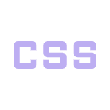

JaP
Actualmente estoy aprendiendo desarrollo web en el programa Jovenes a Programar de Ceibal.
Decidí inscribirme porque la propuesta me parecio muy interesante y una excelente
oportunidad para probar y aprender cosas nuevas.
Desde que empecé el curso, he aprendido un montón y espero seguir haciéndolo en esta segunda fase.
 |
||
|---|---|---|
|  |
Redes